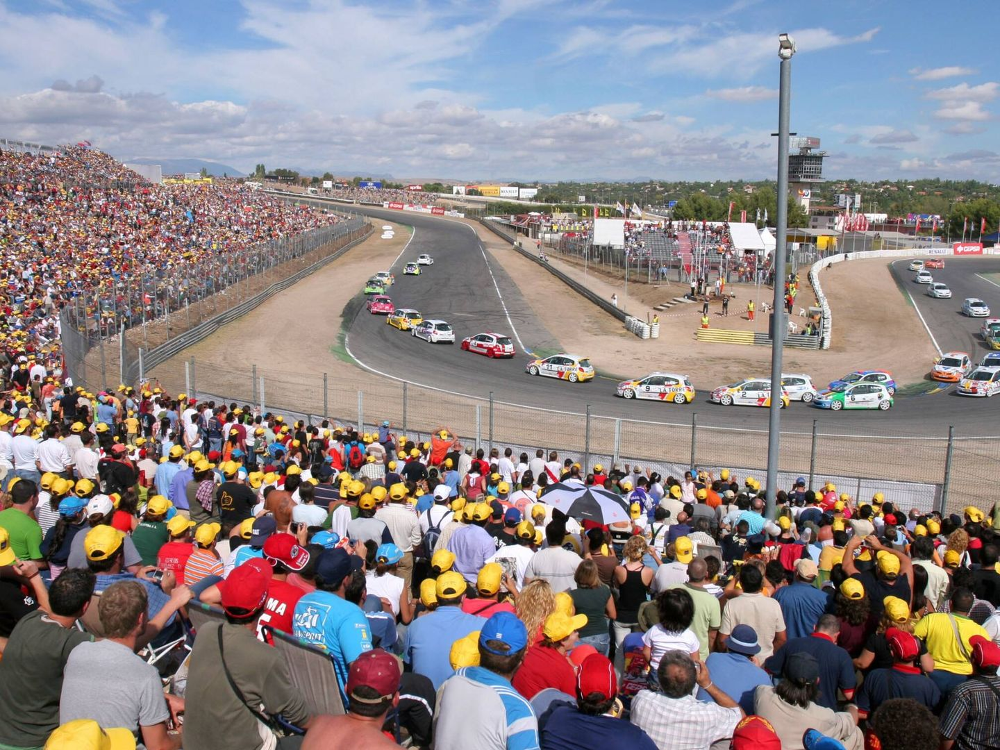
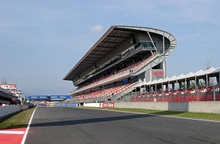

Circuito del Jarama (Madrid, España).
El Circuito del Jarama es un autódromo de 3850 metros de longitud situado en San Sebastián de los Reyes, en la zona Norte de la Comunidad de Madrid. Antiguamente existía otra variante del trazado de 3404 metros de longitud, anterior a la ampliación sobre la cual se basa su actual trazado
Circuito de Catalunya(Barcelona, España).
El Circuito de Barcelona-Cataluña, también conocido como Circuito de Montmeló o Circuito de Barcelona, es un autódromo situado en las poblaciones de Montmeló y Granollers, en la provincia de Barcelona, comunidad autónoma de Cataluña, España. Inaugurado en el año 1991, tiene un aforo de 140.700 espectadores, y acoge diversas competiciones entre las que destacan el Gran Premio de España de Fórmula 1.

Nürburgring (Nürburg, Alemania).
Se encuentra el legendario circuito bautizado como Nürburgring, alias el “Infierno Verde”. Es una pista icónica, con curvas ciegas por doquier y unos peraltes que, cuanto menos, hay que tenerles un gran respeto. De hecho, es posible que estemos ante el trazado más peligroso del panorama actual; un autódromo cuya infame reputación precede a su nombre. Nurburgring es una especie de destino sagrado para los conductores, tanto por profesionales como aficionados.